Generalized Barycentric Coordinates for Warpping
This tours tests several barycentric coordinates (mean value, harmonic and green) for non-convex polygons, and apply them to 2D warping of images.
Contents
Installing toolboxes and setting up the path.
You need to download the following files: signal toolbox, general toolbox and graph toolbox.
You need to unzip these toolboxes in your working directory, so that you have toolbox_signal, toolbox_general and toolbox_graph in your directory.
For Scilab user: you must replace the Matlab comment '%' by its Scilab counterpart '//'.
Recommandation: You should create a text file named for instance numericaltour.sce (in Scilab) or numericaltour.m (in Matlab) to write all the Scilab/Matlab command you want to execute. Then, simply run exec('numericaltour.sce'); (in Scilab) or numericaltour; (in Matlab) to run the commands.
Execute this line only if you are using Matlab.
getd = @(p)path(p,path); % scilab users must *not* execute this
Then you can add the toolboxes to the path.
getd('toolbox_signal/'); getd('toolbox_general/'); getd('toolbox_graph/');
Domain to Warp
Create a cage that bound the domain to warp.
cage = 'V';
First we create a 2D closes polygon, which will be a cage used to perform 2D shape deformation.
delta = .03; rho = .2; eta = .05; x1 = .5-rho-eta/2; x2 = .5-eta/2; x3 = .5+eta/2; x4 = .5+rho+eta/2; switch cage case 'L' V = [[delta;delta] [1-delta;delta] [1-delta;delta+rho] [delta+rho;delta+rho] [delta+rho;1-delta] [delta;1-delta]]; case 'U' V = [[x1;delta] [x4;delta] [x4;1-delta] [x3;1-delta] ... [x3;delta+rho] [x2;delta+rho] [x2;1-delta] [x1;1-delta] ]; case 'V' V = [[x1;delta] [x4;delta] [x4;1-delta] [x3;1-delta] ... [.5;delta+rho] [x2;1-delta] [x1;1-delta] ]; end k = size(V,2);
Compute a grid.
n = 200; x = linspace(0,1,n); [Y,X] = meshgrid(x,x);
Indicator of the shape.
S = 1 - inpolygon(X,Y,V(1,:),V(2,:));
Compute a check-board texture inside the L shaped domain.
m = 30; [XT,YT] = meshgrid((0:n-1)/n,(0:n-1)/n); T = mod( floor(XT*m)+floor(YT*m),2 ); T(S==1) = 1;
Display it.
lw = 3; ms = 25; clf; hold on; plot_surf_texture(cat(3,X,Y,zeros(n)), T'); h = plot(V(1,[1:end 1]), V(2,[1:end 1]), 'r.-'); set(h, 'LineWidth', lw); set(h, 'MarkerSize', ms); view(2); axis('off'); axis('equal');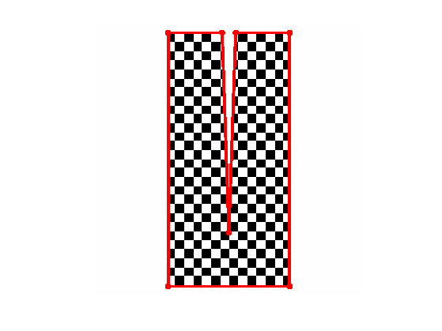
Mean-valued Coordinates
Mean valued coordinates are usually applied for 3D mesh parameterization, and are used to approximate the Lapalcian on a 1-ring of a triangulation.
The mean value coordinates for star-shaped polygons where introduced in
M. S. Floater, Mean value coordinates Comp. Aided Geom. Design 20, 19-27, 2003.
There extension to arbitrary polygon is presented in
K. Hormann and M.S. Floater, Mean value coordinates for arbitrary planar polygons ACM Transactions on Graphics, 25 p. 1424-1441, 2006.
See also the following paper for application to shape warping:
T. Ju, S. Schaefer and J. Warren, Mean Value Coordinates for Closed Triangular Meshes ACM SIGGRAPH 2005, pages 561-566, 2005.
Useful operator.
dotp = @(a,b)sum(a.*b); crossp = @(a,b)a(1,:).*b(2,:)-a(2,:).*b(1,:); normalize = @(a)a./repmat(sqrt(sum(a.^2)), [2 1]);
Points of the domain.
W = [X(:)';Y(:)'];
Each C(:,:,i) will be a barycentric coordinate weight.
C = zeros(n,n,k);
Select a point on the polygon.
i = 4; vi = V(:,i);
Compute the mean coordinate at each point location using the tangent of the two adjacent angles.
U = repmat(vi,[1 n^2])-W; nb = normalize( U ); % length d = sqrt( sum(U.^2) ); for j=mod([i-2,i],k)+1 % point vj = V(:,j); na = normalize( repmat(vj,[1 n^2])-W ); % angle dp = dotp(na,nb); theta = acos(clamp(dp,-1,1)); % add tangent of half angle C(:,:,i) = C(:,:,i) + reshape( tan(theta/2) ./ d, [n n]); end
Exercice 1: (check the solution) Compute the full set of mean coordinates.
exo1;
Normalize them.
C = C ./ repmat( sum(C,3), [1 1 k] );
Extract one of the coordinates, set it to zero outside.
i = 4; c = abs(C(:,:,i))+1e-3; c(S==1) = 0;
Display it.
nl = 15; t = linspace(0,1,n); B = display_shape_function(c'); clf; hold on; imagesc(t,t,B); axis('image'); axis('off'); contour(t,t,c',nl, 'k'); colormap jet(256); h = plot(V(1,[1:end 1]), V(2,[1:end 1]), 'r.-'); set(h, 'LineWidth', lw); set(h, 'MarkerSize', ms);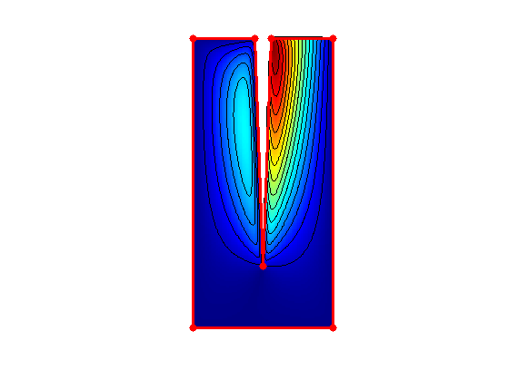
Interpolation function.
applyinterp = @(C,x)sum(repmat(reshape(x(:), [1 1 k]),[n n 1]).*C,3);
Apply the interpolation weight to the X/Y coordinate to test for the linear precision of the coordinates.
clf; imageplot(applyinterp(C,V(1,:)), 'Should be X', 1,2,1); imageplot(applyinterp(C,V(2,:)), 'Should be Y', 1,2,2); colormap jet(256);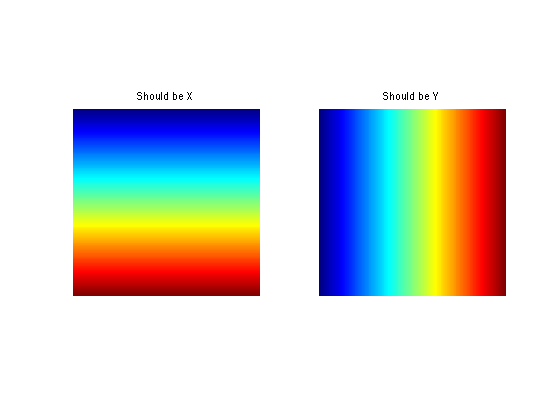
Final position of the cage.
V2 = V; switch cage, case 'L' V2(:,4) = [1-delta;1-delta]; case {'U' 'V'} V2(:,3) = [1-delta;delta]; V2(:,4) = [1-delta;delta+rho]; end
Modify the position of the cage.
rho = .7; V1 = V*(1-rho) + V2*rho;
Warp the grid.
X1 = applyinterp(C,V1(1,:)); Y1 = applyinterp(C,V1(2,:));
Display the warped texture.
clf; hold on; plot_surf_texture(cat(3,X1,Y1,zeros(n)), T'); h = plot(V1(1,[1:end 1]), V1(2,[1:end 1]), 'r.-'); set(h, 'LineWidth', lw); set(h, 'MarkerSize', ms); view(2); axis('off'); axis('equal'); axis([0,1,0,1]);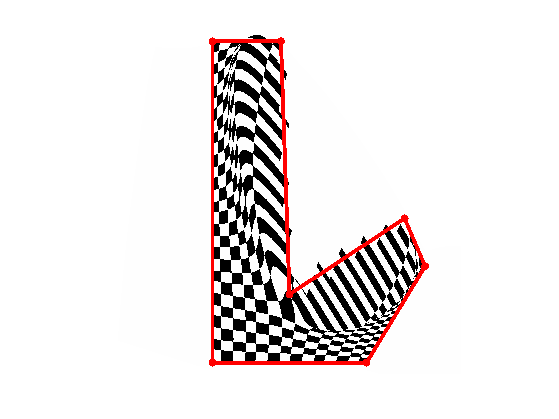
Harmonic Coordinates
Mean valued coordinates goes in some sense "through" the cage. To prevent this, one can compute coordinates using a diffusion within the cage. This leads to harmonic coordinates.
The harmonic coordinates are introduced in
P. Joshi, M. Meyer, T. DeRose, B. Green and T. Sanocki Harmonic coordinates for character articulation ACM Trans. Graph, 3(26), p.71, 2007
Compute the points on the grid that are along the boundary, together with the curvilinear absice.
Vi = round(V*n); bound = Vi(:,1); loc = 1; abscur = 0; for i=1:k j = mod(i,k)+1; d = round(norm(Vi(:,i)-Vi(:,j))); t = repmat((1:d)/d, [2 1]); bound = [bound repmat(Vi(:,i),[1 d]).*(1-t) + repmat(Vi(:,j),[1 d]).*t]; abscur = [abscur abscur(end)+(1:d)/d]; loc(end+1) = loc(end)+d; end q = size(bound,2); bound = round(bound); I = bound(1,:) + (bound(2,:)-1)*n;
Initialize the coordinates.
C = zeros(n,n,k);
Compute the "hat" interpolation function at a given vertex location.
i = 4; u = zeros(k+1,1); u(i) = 1; if i==1 u(end)=1; end u = interp1(0:k,u, abscur);
Initialize the coordinate.
Ci = zeros(n);
Perform diffusion.
sel1 = [2:n 1]; sel2 = [n 1:n-1]; Ci = ( Ci(sel1,:) + Ci(:,sel1) + Ci(sel2,:) + Ci(:,sel2) )/4;
Impose value.
Ci(I) = u;
Display the first iteration.
clf;
imageplot(Ci');
colormap jet(256);

Exercice 2: (check the solution) Perform the full computation of the coordinate C(:,:,i) by iterating the diffusion and imposing the boundary value.
exo2;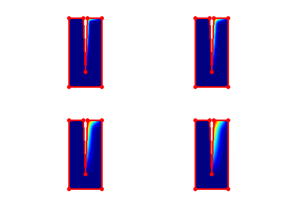
Display one the functions.
c = C(:,:,i); c(S==1) = 0; nl = 15; t = linspace(0,1,n); B = display_shape_function(c'); clf; hold on; imagesc(t,t,B); axis('image'); axis('off'); contour(t,t,c',nl, 'k'); colormap jet(256); h = plot(V(1,[1:end 1]), V(2,[1:end 1]), 'r.-'); set(h, 'LineWidth', lw); set(h, 'MarkerSize', ms);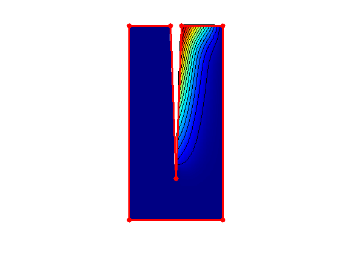
Exercice 3: (check the solution) Compute the full set of coordinate functions C.
exo3;
Apply the interpolation weight to the X/Y coordinate to test for the linear precision of the coordinates. Here it is only valid inside the shape.
clf; A = applyinterp(C,V(1,:)); A(S==1) = 0; imageplot(A, 'Should be X', 1,2,1); A = applyinterp(C,V(2,:)); A(S==1) = 0; imageplot(A, 'Should be Y', 1,2,2); colormap jet(256);
Modify the position of the cage.
rho = .7; V1 = V*(1-rho) + V2*rho;
Warp the grid.
X1 = applyinterp(C,V1(1,:)); Y1 = applyinterp(C,V1(2,:)); X1(S==1) = Inf; Y1(S==1) = Inf;
Display the warped texture.
clf; hold on; plot_surf_texture(cat(3,X1,Y1,zeros(n)), T'); h = plot(V1(1,[1:end 1]), V1(2,[1:end 1]), 'r.-'); set(h, 'LineWidth', lw); set(h, 'MarkerSize', ms); view(2); axis('off'); axis('equal'); axis([0,1,0,1]);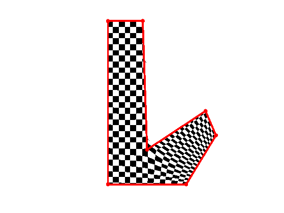
Green Coordinates
Another set of coordinates, that are fast to compute and does not go "though" the cage, are the Green Coordinates, introduced in
Y. Lipman, D. Levin and D. Cohen-Or, Green Coordinates ACM Trans. Graph., 27(3), pages 1-10, 2008}.
Fist compute the oriented normal to the cage.
N = V(:,[2:end 1]) - V; N = N ./ repmat( sqrt(sum(N.^2)), [2 1] ); N = -[-N(2,:); N(1,:)];
Display the normals.
clf; hold on; h = plot(V(1,[1:end 1]), V(2,[1:end 1]), 'r.-'); set(h, 'LineWidth', lw); set(h, 'MarkerSize', ms); rho = .1; for i=1:k j = mod(i,k)+1; a = mean( V(:,[i,j]), 2); h = plot( [a(1) a(1)+rho*N(1,i)], [a(2) a(2)+rho*N(2,i)], 'k' ); set(h, 'LineWidth', lw); set(h, 'MarkerSize', ms); end axis square; axis off;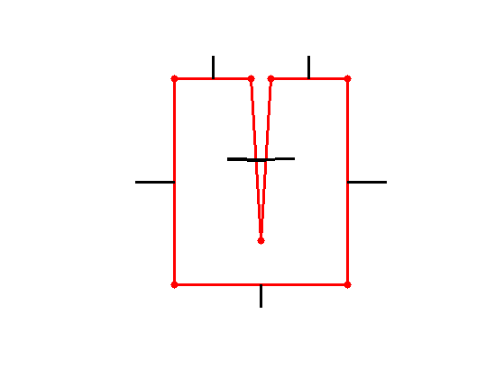
Each C(:,:,i) is a barycentric coordinate weight for the vertices, i and D(:,:,i) is a barycentric weight for the edge (i,i+1).
C = zeros(n,n,k); D = zeros(n,n,k);
Select two consecutive points on the polygon, compute the associated normal
i = 4; j = mod(i,k)+1; vi = V(:,i); vj = V(:,j); ni = -N(:,i);
See the Green Coordinate paper, Appendix A, for these formula.
a = repmat(vj - vi,[1 n^2]); b = repmat(vi,[1 n^2]) - W; Q = sum(a.^2); s = sum(b.^2); R = 2*sum(a.*b); na = sqrt(sum(a.^2)); BA = na .* sum( b .* repmat(ni,[1 n^2]) ); SRT = sqrt( 4*s.*Q - R.^2 ); L0 = log(s); L1 = log(s+Q+R); A0 = atan( R ./SRT ) ./ SRT; A1 = atan( (2*Q+R)./SRT ) ./ SRT; A10 = A1 - A0; L10 = L1 - L0;
Add the contribution of this edge to the weights.
d = - na .* ( (4*s-(R.^2)./Q) .* A10 + R./(2*Q).*L10 + L1 - 2 ) / (4*pi) ; cj = - BA .* ( L10./(2*Q) - A10 .* ( R./Q) ) / (2*pi); ci = + BA .* ( L10./(2*Q) - A10 .* (2+R./Q) ) / (2*pi); D(:,:,i) = reshape(d,n,n); C(:,:,i) = C(:,:,i) + reshape(ci,n,n); C(:,:,j) = C(:,:,j) + reshape(cj,n,n);
Exercice 4: (check the solution) Compute the full Green Coordinates.
exo4;
Display the vertex function.
i = 4; c = rescale(C(:,:,i)); c(S==1) = 0; nl = 15; t = linspace(0,1,n); B = display_shape_function(c'); clf; hold on; imagesc(t,t,B); axis('image'); axis('off'); contour(t,t,c',nl, 'k'); colormap jet(256); h = plot(V(1,[1:end 1]), V(2,[1:end 1]), 'r.-'); set(h, 'LineWidth', lw); set(h, 'MarkerSize', ms);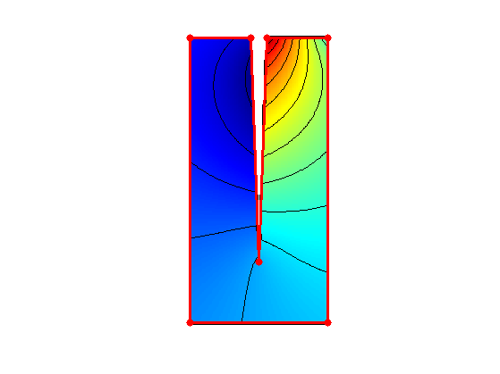
Display the edge function.
c = D(:,:,i); c(S==1) = 0; nl = 15; t = linspace(0,1,n); B = display_shape_function(c'); clf; hold on; imagesc(t,t,B); axis('image'); axis('off'); contour(t,t,c',nl, 'k'); colormap jet(256); h = plot(V(1,[1:end 1]), V(2,[1:end 1]), 'r.-'); set(h, 'LineWidth', lw); set(h, 'MarkerSize', ms);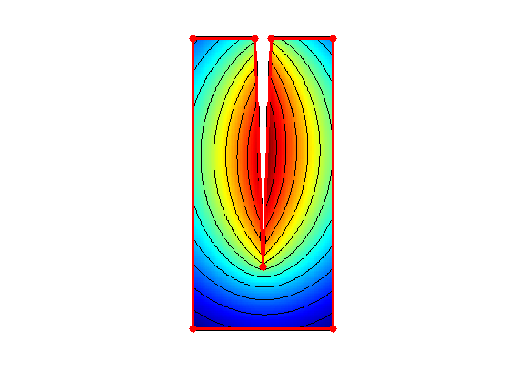
Apply the interpolation weight to the X/Y coordinate to test for the linear precision of the coordinates.
x = applyinterp(C,V(1,:)) + applyinterp(D,N(1,:)); y = applyinterp(C,V(2,:)) + applyinterp(D,N(2,:)); x(S==1) = 0; y(S==1) = 0; clf; imageplot(x, 'Should be X', 1,2,1); imageplot(y, 'Should be Y', 1,2,2); colormap jet(256);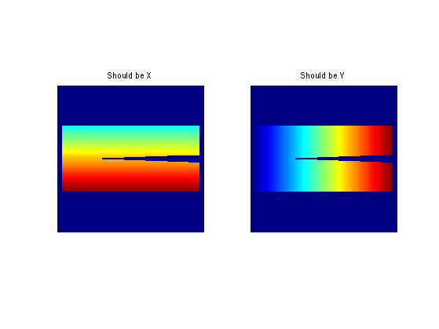
Modify the position of the cage.
rho = .7; V1 = V*(1-rho) + V2*rho;
Compute the modified normals.
N1 = V1(:,[2:end 1]) - V1; N1 = N1 ./ repmat( sqrt(sum(N1.^2)), [2 1] ); N1 = -[-N1(2,:); N1(1,:)];
Compute the amplification factor.
s = sqrt( sum( (V1(:,[2:end 1]) - V1).^2 ) ./ sum( (V(:,[2:end 1]) - V).^2 ) ); s = repmat(reshape(s, [1 1 k]), [n n 1]);
Warp the grid. Do not forget to multiply the normal weight by the amplification factor.
X1 = applyinterp(C,V1(1,:)) + applyinterp(s.*D,N1(1,:)); Y1 = applyinterp(C,V1(2,:)) + applyinterp(s.*D,N1(2,:)); X1(S==1) = Inf; Y1(S==1) = Inf;
Display the warped texture.
clf; hold on; plot_surf_texture(cat(3,X1,Y1,zeros(n)), T'); h = plot(V1(1,[1:end 1]), V1(2,[1:end 1]), 'r.-'); set(h, 'LineWidth', lw); set(h, 'MarkerSize', ms); view(2); axis('off'); axis('equal'); axis([0,1,0,1]);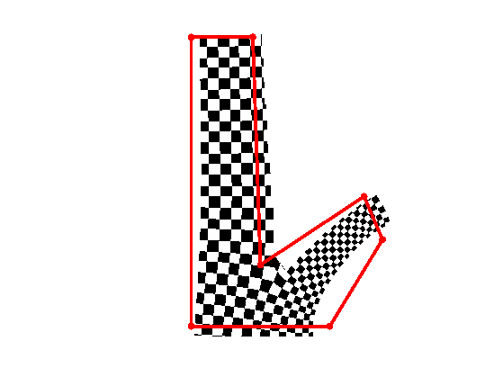
Exercice 5: (check the solution) Compare the Mean value, Harmonic, and Green coordinates on serveral cages, including a cage enclosing a caracter with two legs. Try to move the legs, and compare the results.
exo5;
Volumertric Barycentric Coordinates
The barycentric coordinates extends to 3D volumes.
Exercice 6: (check the solution) Extend the Harmonic and Green coordinates methods to volumetric cages and volumetric data.
exo6;